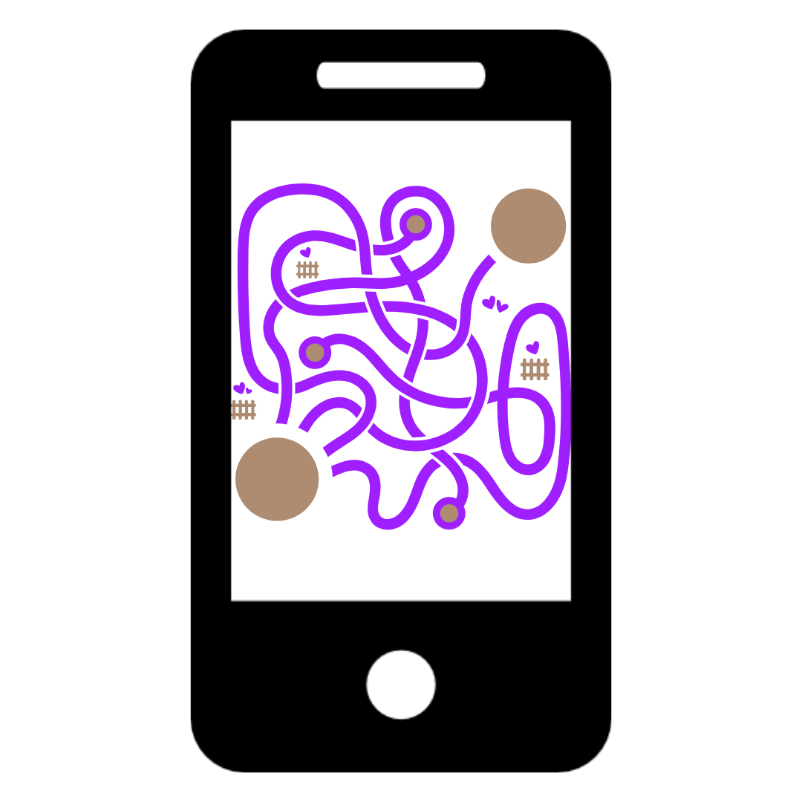

Los "cables cruzados" de nuestra mente: ¿Por qué el mundo parece tan difícil de usar?
← Volver al Blog
Sesgos Cognitivos: Los "puntos ciegos" que construyen barreras
A veces sentimos que la tecnología o los trámites están hechos para complicarnos la vida. Y la verdad es que, muchas veces, lo están. Pero no siempre es por maldad; a veces es porque quienes crean esas soluciones tienen los "cables cruzados".
En psicología, estos cables se llaman sesgos. Son atajos que toma nuestro cerebro para ahorrar energía, se basan en iformación limitada y producen prejuicios inconcientes.
1. El Sesgo de Confirmación: "Solo busco lo que me da la razón"
Es cuando alguien ya tiene una idea en la cabeza y solo busca pruebas para confirmarla, ignorando todo lo demás. Como crees que ya tenés la respuesta, te atrae informción que confirma creencias y pre conceptos.
2. Sesgo del Falso Consenso
Suponer que otros pensaran igual que nosotros, ocurre cuando sobreestimamos en número de personas que estarán de acuerdo con una idea.
3. Sesgo de Actualidad
Tendencia a recordar con mayor claridad la información más reciente que hemos recibido.
4. Sesgo de Prioridad
Tendencia a recordar mejor y darle más importancia a los primeros datos o impresiones.
5. Sesgo de Costo Irrecuperable
Seguir invirtiendo en algo que no funciona solo porque ya se ha gastado mucho tiempo o dinero en ello.
6. Sesgo Implícito
Asociaciones automáticas y estereotipos inconscientes sobre personas según su edad, género, raza o perfil.
7. Efecto de Encuadre
Reaccionar de forma distinta a una misma información dependiendo de cómo se presente (positiva o negativamente).
8. Heurística de Disponibilidad
Evaluar la probabilidad de un evento basándose en qué tan fácil nos viene un ejemplo a la memoria. Creer que todos los usuarios tienen internet 5G solo porque en tu oficina la señal siempre es perfecta.
9. Sesgo de Anclaje
Quedarse "atrapado" en la primera información recibida (el ancla) al tomar decisiones posteriores.
Entender estos sesgos nos ayuda a darnos cuenta de que el problema no somos nosotros. Si no
entendés una app, si el cajero automático te confunde o si el trámite online es un laberinto, no
es que seas "lento" o "anticuado".
Es que alguien, del otro lado, permitió que sus propios sesgos construyeran una barrera en tu
camino. El primer paso para un mundo más inclusivo es reconocer que nuestra realidad no es la
única que existe.
Y acá voy a agregar algo importante que voy a decir en cada post de ahora en más: Tod@s quienes somos usuari@s de tecnologias
tenemos que acostumbrarnos y comprometernos a darle feedback a las páginas o app que usemos, por eso en todas salen carteles ¿Cómo fue tu experiencia? Etc,
es una graaaaan forma de que los diseñadores y desarrolladores puedan mejorar con ese feedback, si no lo hacemos, el diseño seguirá siendo un laberinto para muchos.
Y nosotr@s como diseñador@s tenemos el desafío de reconocer nuestros prejuicios y evitar que afecten en el trabajo.